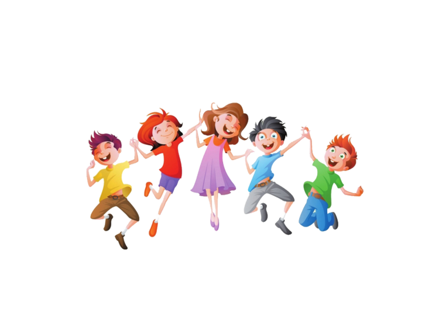

<!DOCTYPE html>
<html>
</html>
<head>
    <meta charset="UTF-8">
    <title>Россия-великая страна</title>
    <meta name="viewport" content="width=device=width, initial-scale=1.0">
    <link rel="stylesheet" href="css/style.css">
    <style>
        .menu-main {
  list-style: none;
  margin: 40px 0 5px;
  padding: 25px 0 5px;
  text-align: center;
  background: white;
}
.menu-main li {display: inline-block;}
.menu-main li:after {
  content: "|";
  color: #606060;
  display: inline-block;
  vertical-align:top;
}
.menu-main li:last-child:after {content: none;}
.menu-main a {
  text-decoration: none;
  font-family: 'Ubuntu Condensed', sans-serif;
  letter-spacing: 2px;
  position: relative;
  padding-bottom: 20px;
  margin: 0 34px 0 30px;
  font-size: 17px;
  text-transform: uppercase;
  display: inline-block;
  transition: color .2s;
}
.menu-main a, .menu-main a:visited {color: #9d999d;}
.menu-main a.current, .menu-main a:hover{color: #feb386;}
.menu-main a:before,
.menu-main a:after {
  content: "";
  position: absolute;
  height: 4px;
  top: auto;
  right: 50%;
  bottom: -5px;
  left: 50%;
  background: #feb386;
  transition: .8s;
}
.menu-main a:hover:before, .menu-main .current:before {left: 0;}
.menu-main a:hover:after, .menu-main .current:after {right: 0;}   
@media (max-width: 550px) {
.menu-main {padding-top: 0;}
.menu-main li {display: block;}
.menu-main li:after {content: none;}
.menu-main a {
  padding: 25px 0 20px; 
  margin: 0 30px;
}
}
    </style>
</head>
<body>
    <style>
        body{
            background-color: #FA8072;
        }
    </style>
<center>
    <ul class="menu-main">
        <li><a href="Россия-Великая страна!.html" class="current">Главная</a></li>
        <li><a href="Гимн.html">Гимн</a></li>
        <li><a href="Герб.html">Герб</a></li>
        <li><a href="Флаг.html">Флаг</a></li>
      </ul>
 <h1><center><font size="8">Россия - великая страна!!!</font></center></h1>
 <center>
<p align="left">
<b><font size="6"><center>Почему же???</center></font></b></p>
</center>
<p align="center" vspace="20"><strong><i><b><font size="6">Я считаю, что Россия является великой страной благодоря народу,проживающему на её территории, истории, которая наполнена множеством интересных событий, а также благодоря тому, что русский народ не сможет никто и никогда сломить. Ведь нас объединяет общий язык, история и религия. Еще с древних времён слово Русь обозначает светлое место. Отсюда и значения слов русый парень или русая девушка (светлые волосы). И если вы говорите : "Я русский / русская". Помните, что это равнозначно тому, что вы говорите : "Я чистый и светлый человек"
  Русский народ не победим! Нас объединяет душа. И именно это делает нашу страну великой!!!  
</font></b></p></strong></i>
<center>
</center>
</body>
</html>